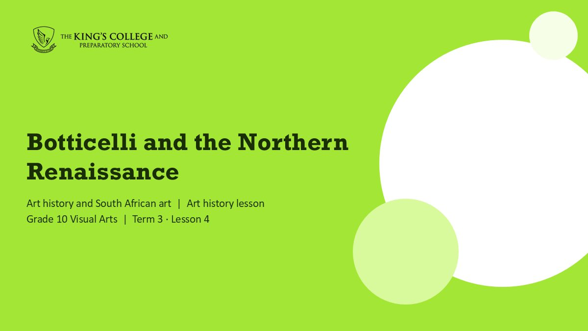

Term 3 · Lesson 4 · Art history lesson
Botticelli and the Northern Renaissance
Start Here
Today I Will
- Analyse Botticelli's Birth of Venus using the four FET parts
- Explain how patrons and ideas shaped the painting
- Describe how Jan van Eyck used oil glazes in the north
Think first
Why would a Christian city like Florence want a painting of an ancient pagan goddess?
Words to Know
| Word | Meaning |
|---|---|
| Oil glaze | A thin, see-through layer of oil paint laid over a dry layer to give deep, glowing colour. |
| Symbolism | Using an object, colour or figure to stand for an idea beyond itself. |
| Mythology | Ancient stories about gods and heroes, such as the Greek and Roman myths. |
| Patron | A person or group who pays for and often chooses the subject of an artwork. |
| Neoplatonism | A philosophy linking earthly beauty with divine, spiritual beauty. |
| Tempera | Paint made from pigment mixed with egg yolk. |
Slides

Notes
Botticelli's Birth of Venus in depth; Jan van Eyck and oil glazes in the north.
The Birth of Venus (c. 1484 – 1486)
- Artist and medium: Sandro Botticelli (c. 1445 – 1510); tempera on canvas; Uffizi Gallery, Florence.
- Subject: The goddess of love arrives on a scallop shell, blown ashore by wind gods while an attendant offers a cloak.
- Line and grace: Flowing hair, rippling drapery and a decorative, almost flat sea matter more to Botticelli than deep perspective.
- The ideal figure: Venus is idealised, based on a classical statue type, in a graceful contrapposto, shown modestly.
- Meaning: Neoplatonism in the Medici circle taught that earthly beauty can lead the mind towards divine beauty.
- Patronage: Unusual for its time: on canvas, for a private patron, with a mythological rather than a Christian subject.
Italy and the North in the 1400s
| Florence (Botticelli, Masaccio) | Flanders (Jan van Eyck) |
|---|---|
| Fresco and egg tempera, which dry quickly. | Oil paint, which stays wet and can be built up in thin glazes. |
| Mathematical linear perspective. | Close observation of light, reflections and texture. |
| Classical and mythological ideas revived. | Everyday objects filled with hidden symbolism. |
| Idealised, graceful figures. | Astonishingly fine detail, as in the Arnolfini Portrait (1434). |
Remember
Botticelli painted beauty with line; Van Eyck painted the world with light.
Practical
You need: History booklet, visual journal, four-part analysis sheet
Four-Part Analysis of the Birth of Venus
- Heading: Botticelli, The Birth of Venus; medium: tempera on canvas; date: c. 1484 – 1486.
- Describe: the subject, where the figures are placed, the focal point and the mood.
- Analyse: use identify, describe, effect for line, colour and balance.
- Interpret: explain one symbol (the shell, the cloak or the wind gods) and the Neoplatonic idea.
- Opinion: is this painting successful? Give two reasons backed by your analysis.
Test Yourself
- Identify two features that made the Birth of Venus unusual for its time.
- Explain how oil glazes changed painting in Flanders.
- Compare Botticelli's use of space with Masaccio's.
Show answers
1. Any two: painted on canvas, for a private patron, a mythological not Christian subject. 2. Thin, transparent layers built up slowly gave deep, glowing colour and very fine detail. 3. Masaccio used linear perspective to create deep, real space; Botticelli kept the space shallow and decorative and focused on line and grace.
Finished Early?
North versus south in two columns
Compare two ways of painting in the 1400s.
- Draw two columns in your VJ: Italy and Flanders.
- List the paint used, how space is shown and the kind of subject in each.
- Name one key work for each column.
- Sketch a tiny object from your desk with fine detail, as a Flemish painter would.